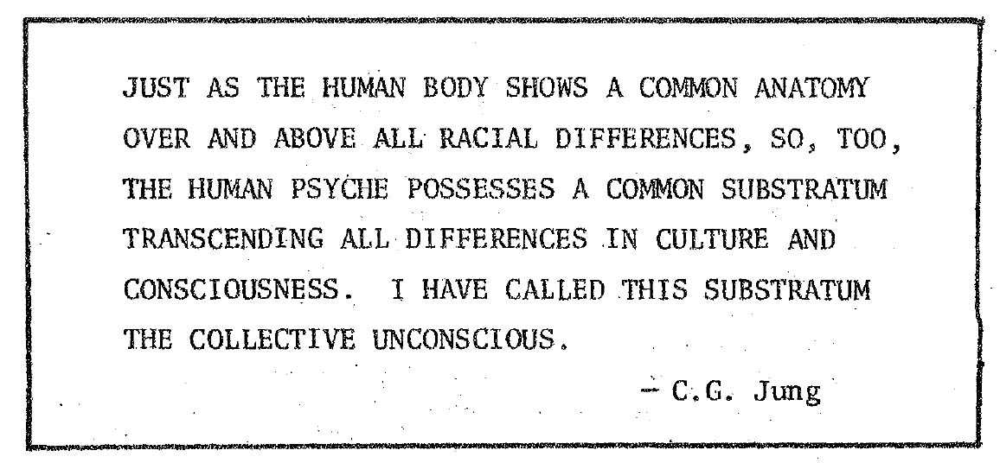

A good understanding of our dreams will lead us to a better understanding of ourselves. Recently a group of friends and I got together in Stevens Point, Wisconsin, and started a dream group. The group is based on sharing out recent dreams and trying to help each other to better understand the meanings of the dreams. The goal of the group is to be more aware of ourselves through our dreams and to advance in self-realization.
A long time ago, I began to work with my dreams by setting my alarm clock to awaken me in the night at a time when, according to to the information about the REM cycle, I might be most likely to remember a dream. I had pen and notebook ready at hand for recording. Just about every time I awakened with the clock, I would write down some clues which would help me recall my dreams in the morning and record them in more detail.
Now I am habituated to remembering my dreams and I can tell when I am going into the waking state. I know that I can spend up to 10 minutes in this state, so I now rehearse the dreams in my memory, and fix the images in my mind. After waking up, I usually spend perhaps half an hour in bed thinking about the night of sleep and and dreams. The dreams that I first noted down in the middle of the night, I fill in with more detail as I write all the dreams I have been able recall. Working with the dreams begins right away as I write them down and think about them. Working with my dreams, remembering them and writing them down I have discovered that I have had precognitive dreams, lucid dreams, and dreams that led to the feeling of deja vu when awake.
Sometimes I make a sketch of a particularly important dream image. It is very helpful to sketch a dream right after waking - I try to capture the colors with colored pencils. Some dreams are so moving that just recording them in a journal is not enough - so I write them as poems. Sharing dreams with a close friend usually gives me some different perceptions of my dreams and of myself. It is almost like therapy, because a close friend is aware of my personal life and can often give me some insights. Working through my dreams makes me realize more about myself. This understanding has led me to some unexpected insights into my life!
